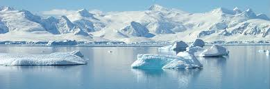

~Antarctica~
This is a map of Antarctica.
Antarctica is home to Penguins!
Penguins are birds and they don't jump, they bounce!
There are all kinds of penguins like the yellow eyed penguins to the emperor penguins!
Here is a sample of the sound Penguins make!

Antarctica is home to many plants and animals but not humans
It is where 90% of the earths ice is found
Since it does not rain much in Antarctica it is considered a desert
©2015LeilaniWilson